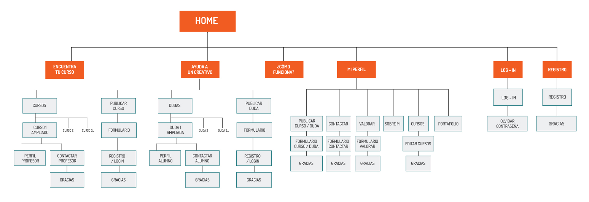
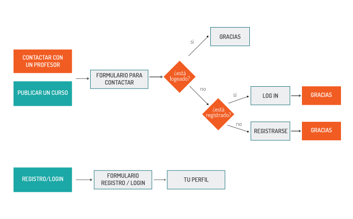

Memoria
Introducción y contexto
En esta memoria se pretende recopilar, mostrar y analizar los diferentes aspectos que conforman nuestro proyecto final del Máster de Diseño Web de la Escuela de Diseño BAU: “puntoyseguido”.
Primero, mostraremos los diferentes pasos que hemos seguido en el proceso de creación y las metodologías utilizadas para mejorar este proceso. Más adelante, mostraremos el diseño utilizado en “puntoyseguido” y las soluciones tecnológicas a las que llegamos como equipo. Por último, explicaremos el modelo de negocio pensado para que el proyecto pueda salir adelante en el mercado y generar beneficios para la empresa.
Así pues, empezamos el proyecto final del Máster con un objetivo: el diseño y realización de una plataforma web funcional, accesible y usable por todos, que siguiera los estándares web y propusiera una idea de negocio que, por una parte, resolviera un problema al usuario y, por otra, se diferenciara de la competencia.
La idea inicial del proyecto vino dada gracias a la propuesta que se nos presentó en forma de briefing. En nuestro caso, se trataba de una plataforma en la que diseñadores y clientes pudieran comunicarse de forma ágil y útil.
Partiendo de esta premisa, “puntoyseguido” surgió después de un largo proceso y horas de trabajo. Se realizaron entrevistas y pruebas para determinar, finalmente, nuestra idea de valor, muy diferente a la inicial.
De esta manera, nuestro proyecto se convirtió en lo siguiente: una plataforma web creada para diseñadores y artistas de Barcelona que buscan intercambiar conocimientos y mejorar sus habilidades en programas informáticos. Esta idea fue la conclusión y solución a una problemática que encontramos: jóvenes profesionales con una formación incompleta en casi todos los campos creativos lo que les generaba dudas a la hora de realizar proyectos o trabajos amplios que incluían conocimientos de otras áreas del diseño.
A partir de este problema, pudimos determinar también el target al que iba dirigido nuestra plataforma: estudiantes o trabajadores con poca experiencia en el mundo laboral que formaran parte del mundo creativo.
“puntoyseguido” se convirtió en nuestro proyecto y empezamos a visualizar cada una de sus funcionalidades, las priorizamos y las dividimos en diferentes partes para presentar un prototipo inicial de valor.
A través de diferentes diseños que fuimos creando, realizamos tests de usabilidad y accesibilidad web a nuestro público objetivo y realizamos todas las variaciones y cambios necesarios en diversos aspectos de la plataforma para que nuestros usuarios pudieran encontrar fácilmente lo que querían y nosotros consiguiéramos nuestros objetivos.
Finalmente, pensamos en un modelo de negocio que nos sirviera en el futuro y que nos permitiera crear una empresa rentable. Empezamos analizando posibles vías para conseguir darnos a conocer a los usuarios y recapacitamos cómo, una vez nos conocieran, aprovecharíamos cada una de las funcionalidades de la plataforma para ganar rentabilidad.
En conclusión, nuestro proyecto “puntoyseguido” ha sido pensado, trabajado y analizado paso por paso para resolver una problemática actual y crear finalmente una plataforma web que se adapta a las necesidades de muchos creativos jóvenes y al mercado que les rodea. “puntoyseguido” es, por lo tanto, un proyecto viable y lleno de futuras posibilidades.
Elevator Pitch
“puntoyseguido” es un proyecto para creativos de Barcelona con pocos recursos económicos , quienes necesitan aprender de forma económica distintas funciones de un software que utilizan en el ámbito estudiantil y/o profesional.
“puntoyseguido” es una plataforma social creada a partir de anuncios de usuarios que permite el intercambio de conocimientos a cambio de una comida, una cena o una caña. Un creativo puede dar una clase a otro creativo y obtener una comida a cambio o puede recibir una clase de aquello que necesite aprender. Nuestra plataforma acoge los anuncios de cada uno y ayuda a que los usuarios se contacten.
A diferencia de tutoriales, cursos online, profesores particulares, banco de tiempo y foros, “puntoyseguido” permite el contacto personal en tiempo real entre profesor y alumno de una manera económica y también la resolución de dudas específicas y concretas al momento.
Nuestro proyecto, en definitiva, ayuda al contacto entre creativos para intercambiar conocimientos a través de los cursos que ellos mismos crean, económicos , directos y con contenidos específicos útiles.
Objetivos del proyecto
- Obtener un número elevado de usuarios registrados en la plataforma para crear una comunidad de intercambio amplia y única que proporcione múltiples opciones de cursos entre los usuarios.
- Crear una base de anuncios de calidad, específicos y útiles para nuestros usuarios.
- Ayudar a que los creativos de Barcelona aprendan y mejoren como profesionales del sector de forma activa.
- Crear vínculos entre todas las áreas creativas para mejorar y nutrir cada uno de los campos que forman este sector.
- Promocionar y promover el intercambio de conocimientos entre los usuarios de forma altruista y desinterasada.
- Mostrar las habilidades de los creativos y promoverlas para que los usuarios quieran enseñar aquello que dominan.
- Proporcionar un diseño sencillo, usable y accesible que se diferencie de la competencia y permita una navegación ágil a nuestros usuarios.
- Promover el contacto cara a cara entre creativos y ayudar a mejorar sus círculos profesionales y sociales gracias al sistema de intercambio de conocimientos por una comida.
- Estar presentes en las principales redes sociales y mantener la plataforma actualizada en todo momento.
- Promover el sistema de trueque en una sociedad con graves problemas económicos.
Argumentación del proceso
UX
Investigación y entrevistas - Origen de "puntoyseguido"
Este proyecto surgió a partir de detectar que la mayoría de estudiantes hacían una formación complementaria a sus estudios.
En primer lugar, nos basamos en nuestra propia vivencia como estudiantes y en que habíamos usado diferentes medios para complementar nuestra formación. "puntoyseguido" quería poder ofrecer una alternativa a los otros canales de conocimiento con características diferentes para captar cierto público de estudiantes.
Investigación y entrevistas - Necesidades de los usuarios
Para empezar a detectar qué necesidades tenían los estudiantes creativos y qué les podríamos ofrecer hicimos entrevistas a 14 estudiantes de diseño en Elissava, Bau y Universidad de Barcelona para detectar con qué herramientas aprendían y cuáles eran los puntos fuertes y débiles de las herramientas para poder ofrecer una alternativa interesante y útil.
A partir de las diferentes entrevistas, obtuvimos que principalmente los estudiantes buscan información sobre programas informáticos en amigos y tutoriales, y en algunos pocos casos, cursos y profesores particulares.
Amigos: es el canal más utilizado por los estudiantes ya que los ven diariamente en la Universiad y les pueden ayudar en el momento, gratuita y presencialmente. Sin embargo, los inconvenientes con que se encuentran es que en la época de entregas finales tienen poco tiempo para ayudar a los compañeros o al tener los mismos estudios no saben ayudarlos, así que a menudo, no consiguen resolver sus dudas con los programas informáticos.
Tutoriales: los tutoriales son una fuente de información gratuita accesible todos los días del año. Además, puedes encontrar blogs y vídeos de casi cualquier cosa. El inconveniente con que se encuentran los jóvenes es que a veces son demasiado específicos y al querer hacer una acción ligeramente diferente no lo consiguen y no saben cómo resolverlo ya que el feedback de los tutoriales es lento y escueto.
Cursos: los principales problemas de los cursos es su precio elevado y que son bastante extensos. Además, se encuentran que una gran parte del temario ya es conocida y por lo tanto no les sale a cuenta apuntarse.
Profesores particulares: el principal problema de los profesores particulares es el coste del profesor y el desconocimiento sobre dónde poder encontrar personas cualificadas que realmente resuelvan tus problemas.
A partir de las entrevistas pudimos detectar que cada uno de los métodos más utilizados por los jóvenes presentaba algunos aspectos negativos en ciertos momentos del aprendizaje ya fuera por el precio, la falta de cercanía o el desconocimiento sobre la calidad del método.
Gracias a la detección de la posibilidad de ofrecer una forma de aprendizaje económica, cercana y personalizada surgió nuestra propuesta, “puntoyseguido”.
Investigación y entrevistas - Inputs obtenidos de las entrevistas
Gracias a las entrevistas y a conversar con distintos estudiantes pudimos detectar inputs importantes para ellos.
- Había una parte importante de estudiantes que no tenían tiempo para realizar clases pero si que ayudarían a otros estudiantes respondiendo emails. Esto permitió ofrecer a los profesores realizar las clases presencialmente, por video llamada y se añadió por email.
- Uno de los elementos principales que los estudiantes decían fijarse para elegir un profesor era en su portafolio, pero la gran mayoría no tenían su propio portafolio. Esta incongruencia se solucionó ofreciendo un sistema para poder subir en la propia plataforma diferentes trabajos para todos aquellos usuarios que no dispusieran de un portafolio online.
- Muchos de los estudiantes más interesados con la propuesta usaban plataformas de intercambio como couchsurfing o compartir coche, información relevante para poder colocar publicidad en estas plataformas o hacer otras acciones similares.
Investigación y entrevistas - Motivaciones de los profesores
El principal problema que surgió en esta plataforma y que era vital solventar para su buen funcionamiento era buscar alicientes, motivaciones para que los usuarios fueran los profesores de la plataforma y no únicamente entraran como alumnos. Al no haber una recompensa económica se necesitaba una motivación para conseguir que los usuarios realizaran clases gratis.
En las fases más tempranas del proyecto se planteó usar un sistema de puntos, parecido a los bancos de tiempo, para que los usuarios recibieran puntos al dar clases y gastaran los puntos al recibir una clase. De esta manera los usuarios tendrían la necesidad de ser profesor para poder optar a ser alumno. Cuando se fue avanzando en el proyecto, esta idea nos supuso más un impedimento que una solución ya que técnicamente era complejo y usar la técnica de gamificación, sin controlar este sistema, podría ser contraproducente e ir en nuestra contra.
Después de abandonar esta propuesta se hicieron nuevas entrevistas donde se quiso detectar qué motivaría a los usuarios a dar clases. Encontramos dos características principales:
Reconocimiento visible de sus competencias. Un elemento que atraía a los usuarios era poder mostrar sus mejores proyectos, recibir valoraciones positivas de su clase y de sus conocimientos ya que les podrían servir como herramienta para mostrar sus conocimientos.
Networking. Tener un encuentro con otros usuarios con una situación similar a la suya, les podría abrir puertas para ampliar su lista de contactos y que les sirviera para encontrar trabajo.
Gracias a estos inputs, “puntoyseguido” iteró y recondujo su propuesta de valor para los profesores que se materializó en distintas acciones:
- Potenciar que los usuarios valoraran a los profesores y poder vincular las valoraciones recibidas con otras redes sociales como linkedin.
- Incentivar que las clases fueran presenciales en bares y hacer que los usuarios que recibieran la clase invitaran al profesor a sus consumisiones. Esto permite crear un ambiente más distendido y a pesar de no tener un beneficio económico tienes una compensación.

Investigación y entrevistas - Validación de las motivaciones
En fases más avanzadas del proyecto quisimos comprobar si los usuarios harían intercambios gratuitos. Para ello se colgaron diferentes anuncios en bibliotecas y en webs de anuncios como Loquo o tusclasesparticulares.com.
Había anuncios donde ofrecíamos clases gratuitas y en otros pedíamos que nos ayudaran. En los dos casos, hubo gente que se interesó por el intercambio y sobre todo nos sorprendió que una gran parte de los que se ofrecían como profesores era gente que hacía poco que estaban en Barcelona y les facilitaba conocer gente.

De los diferentes correos que se recibieron, se acabó realizando una clase presencial de Wordpress a una chica que había estudiado Bellas Artes en la Universidad de Barcelona. A pesar de que sólo fue una persona, nos permitió realizar una clase y conversar con ella sobre el proyecto para obtener información sobre las clases.
Los puntos claves que obtuvimos de la conversación y que aplicamos en el proyecto fueron:
- Reticencia a quedar con gente desconocida en sus casas, prefiriendo realizar las clases en bares.
- Interés por valorar al profesor como agradecimiento a haberle ayudado gratuitamente.
Test de usuario
Durante todo el proceso del proyecto se han realizado test de usuarios para validar la usabilidad de la plataforma y las diferentes funcionalidades de cada release.
Se realizaron 2 tipos de test de usuario: pruebas con usuarios y cardsorting.
Test de usuario - Pruebas con usuarios
En las diferentes release se han realizado test con usuarios, pidiéndoles que realizaran diferentes acciones para poder entender si los usuarios tenían problemas con las funcionalidades de la plataforma, si los copys eran claros y si brindábamos realmente la información que los usuarios necesitaban.
Desde el comienzo de la plataforma nos hemos encontrado con dos problemas principales: transmitir en la home el concepto de la plataforma y que los usuarios entendieran qué acciones eran para el rol del profesor y qué acciones eran para el rol del alumno.
Para solventar estos dos dificultades, se testearon ambos problemas en todas las releases hasta encontrar una manera de comunicar aquello que queríamos de una forma comprensible e intuitiva para el usuario.
Prueba en Interactius
En la tercera release tuvimos la suerte de acudir a un laboratorio de UX a realizar un test de usuario para verificar las principales acciones de la plataforma: entender la home, ver el listado de cursos, contactar con un profesor y colgar tu propio curso. También quisimos ver si los usuarios entendían claramente qué elementos eran clicables y cuales no.


En cuanto a la navegación de la web, verificamos que detectaban claramente qué elementos eran clicables y sabían entender la mayoría de apartados que contenia la plataforma. Sin embargo, nos sirvió para darnos cuenta de que no habíamos resuelto satisfactoriamente los dos roles del usuario: no sabían detectar qué acciones estaban pensadas para el alumno y cuales para el profesor. Esto desembocó en un cambio radical de la home y en modificar los copys y call to actions.
En la home, se optó por explicar claramente las dos acciones que se podían hacer en la plataforma: aprender y enseñar y cada una de ellas acompañada de un call to action: "Encuentra tu curso" y "Busca tu alumno".
También se añadieron subtítulos a determinados títulos principales de las páginas para situar a los usuarios en qué página se encontraban y qué podían hacer en esa sección.
Test de usuario - Cardsorting
Test 1: componer los anuncios.
Esta prueba fue para testear la historia de usuario: " visualizar anuncios alumnos" de la primera release.
Hubo un interés especial para entender qué información era más relevante para los usuarios a la hora de elegir un curso u otro. Este test consistía en que los usuarios tenían que componer ellos mismos los anuncios juntando diferentes trozos de papel con información del curso (título, imagen del usuario, imagen del proyecto, disponibilidad, valoraciones...)
Este test se realizó a dieciocho personas y las conclusiones que se obtuvieron fueron las siguientes:
- Querían ver la imagen de lo que aprenderían en el curso.
- La foto del usuario era importante porque daba confianza pero no era necesaria en el momento de decidirse por qué curso realizar.
- Elementos como tags o información del usuario los veían poco relevantes.
Test 2: copys de los cursos.
Otro elemento importante era conocer qué tipo de copys en los cursos llamaban más la atención a los usuarios. Para ello se mostraron diez títulos y descripciones sobre un curso de retoque fotográfico en Photoshop a diez usuarios, y se pedía a los usuarios que indicaran qué cursos les resultaban más interesantes y cuales menos.
Las conclusiones principales que se obtuvieron fueron:
-Interés por los cursos descriptivos, donde explicaban qué aprenderían y sobre todo aquellos en que los profesores remarcaban que se trabajaría con el propio proyecto del alumno.
- Los anuncios que no interesaron fueron aquellos en que el usuario describía su vida y su recorrido profesional.
- Los títulos que llamaron más la atención fueron los cortos y descriptivos.
Test 3: uso de los filtros.
Esta prueba fue para testear la historia de usuario: "Filtraje de cursos" de la tercera release.
Se realizó otro test para conocer el proceso de filtraje de los cursos. Los usuarios tenían un papel simulando la pantalla de ordenador con los cursos y tenían que colocar encima diferentes papeles con los filtros.
Se testeó con cuatro usuarios y la conclusión principal que se obtuvo fue que filtrarían por área creativa, después por disponibilidad y por último por método de clase.
Test de usuario - Tono de la plataforma
Por lo que respecta al tono escogido para dirigirnos a nuestros usuarios, el equipo resolvió que fuera ameno y cercano. Esto surgió como resultado de los test de usuario que realizamos, en los que los usuarios nos dieron a entender que debíamos transmitir proximidad a ellos y utilizar a nuestro personaje para crear mayor empatía. A partir de ahí y pensando que la mayoría de nuestro público objetivo iba a ser universitario, decidimos que la mejor opción era relacionar un lenguaje informal y alegre con el muñeco creado y de esta manera, aumentar la simpatía de los usuarios hacia éste y hacerlo más real y divertido.
Si navegamos por toda la web, observamos que los textos que aparecen tienden a ser más coloquiales que formales, aunque siempre son correctos y apropiados al contexto en el que se encuentran. Como ejemplo, en el popup que aparece para publicar un curso, podemos ver algunos consejos que da nuestro personaje para que el usuario escriba correctamente su anuncio del curso. La utilización de los imperativos en primera persona (“Mira nuestros consejos”) o el uso repetido de exclamaciones dirigidas al público, todo ello relacionado con la aparición del muñeco, acerca la plataforma a nuestro público y aporta a la web las connotaciones de diversión y simpatía que los usuarios jóvenes desean. Este tono relajado, cercano e informal predomina en toda la web de “puntoyseguido” y la unifica a nivel textual.
Arquitectura de la información - Sitemap
Arquitectura de la información - Navegación en la web
En los siguientes esquemas se muestra de una manera simplificada, las dos maneras de navegación en la plataforma, dependiendo de si el usuario entra para aprender o para enseñar.
Los usuarios no registrados pueden navegar y visualizar los distintos cursos de los profesores y las distintas dudas de los alumnos. Sin embargo, cuando un usuario quiere publicar un curso, contactar o valorar a un usuario, esta acción implica que el usuario tenga que registrarse.
El siguiente workflow, muestra las diferentes variantes de una misma acción dependiendo de si estás logeado, registrado o si aún no estás inscrito en la plataforma.
Releases
Primera release
En la primera release se propuso entregar las mínimas funcionalidades para que la web pudiera lanzarse al mercado.
En esta release, se hicieron todas las historias de usuario planteadas menos diseñar las newsletters. En el momento de abarcar esta historia de usuario nos dimos cuenta que no era muy importante en la fase del proyecto en que nos encontrábamos.
Se testearon las diferentes funcionalidades y se detectó que la home era bastante confusa.(Este problema fue apareciendo durante diferentes meses, el proceso de copys que se siguió está explicado en el apartado: Pruebas con usuarios)
Segunda release
La segunda release se enfocó para que los usuarios pudieran registrarse en la plataforma y tener un perfil de usuario para captar los usuarios que entraran en la web. También se decidió que era importante un formulario para contactar con otros usuarios.
En esta release, se realizaron todas las funcionalidades planteadas pero gracias a las pruebas con usuarios se detectaron diferentes errores en algunas funcionalidades.
- El proceso de contactar, si no se estaba logeado, era complejo y no intuitivo.
- Dificultad en diferenciar el apartado de buscar cursos de profesores con el de buscar cursos de alumnos. El apartado de los cursos de los profesores era claro, pero se confundían mucho con el apartado de ayudar a un alumno y se tuvo que hacer diferentes cambios en los copys. Los dos cambios más significativos fueron cambiar el copy del menú "Ayuda a un creativo" por "Busca tu alumno" y el call to action "Ayúdale" por "Enséñale".
Tercera release
En la tercera release se priorizó mejorar las funcionalidades de la segunda release que no habían acabado de resolverse. También nos centramos en ofrecer al usuario un sistema de filtros y en ordenar los anuncios para que los creativos pudieran encontrar de una manera ágil el curso deseado. También se priorizó la creación de un sistema de valoraciones para que los usuarios pudieran intercambiar feedback de las clases y conseguir que dar clases fuera una motivación para los profesores. Además se quiso empezar a plantear de una manera clara el intercambio de puntos entre usuarios.
Se realizaron las diferentes historias de usuario a excepción del sistema de puntos, funcionalidad que se ha descartado de la plataforma. En el momento de plantearnos esta funcionalidad, nos dimos cuenta que implicaba muchos esfuerzos técnicos y además no aseguraba que los usuarios realmente harían más clases con este sistema que sin él, así que se optó por descartarlo y se hizo un estudio a partir de entrevistas y encuestas sobre qué motivaría a los usuarios a dar clases (Para más información ir a la sección UX > entrevistas)
Para encontrar la mejor manera de mostrar los filtros y el ordenar por se usó la técnica del cardsorting (explicada en el apartado pruebas con usuario > card sorting)
Las distintas funcionalidades se probaron con un prototipo, nos sirvió para detectar:
- Los usuarios necesitaban tener más información en la pantalla de curso ampliado, querían ver fácilmente las valoraciones y la imagen del usuario sin tener que ir al perfil del usuario.
- Cuando clicaban las estrellas de valoración, creían que les llevaría a una sección donde pudieran ver las valoraciones del profesor y también valorarlos.
Cuarta release
En la cuarta release se dio émfasis en mejorar diferentes funcionalidades de la plataforma que se había detectado que tenían errores como las explicaciones del cómo funciona o el proceso de valoración. Por otra parte, se quiso añadir un sistema de mensajería interno en la plataforma para tener control sobre quién enviaba un correo a quién. En las anteriores release, el usuario contactaba con otro usuario a través de un formulario pero el mensaje llegaba al correo personal del usuario y perdíamos el control sobre si se mensajeaban más o no.
De las 8 historias de usuario planteadas se acabó descartando el sistema de Check-in. Esta funcionalidad consistía en que los usuarios tenían que reservar la clase e indicar cuando se producía el intercambio. En una primera instancia se había considerado una funcionalidad básica para poder tener control sobre quiénes realizaban el intercambio y cuándo se producía y saber si podían o no valorar al otro. Era información valiosa para nosotros pero al usuario le suponía una pérdida de tiempo tener que hacer un check-in al empezar la clase. Estábamos poniendo barreras. Nuestro público tenía que entender cómo hacer el check-in, cuándo hacerlo, etc.
Por lo tanto, se descartó la historia de usuario pero se optó por enviar un mensaje al correo electrónico de los usuarios que se habían contactado sugiriéndoles que valoraran al usuario con quien habían realizado el intercambio.
Quinta release
Para la última release se decidió no añadir funcionalidades nuevas en la web y centrarnos sólo en mejorar funcionalidades existentes, definir y validar un sistema de negocio, hacer una guía de estilos detallada y seguir programando la web, sobre todo la parte responsive.
En la cuarta release se identificó que el apartado "cómo funciona" era confuso para los usuarios. No había suficiente información sobre la plataforma. En la quinta, se probaron distintas opciones sobre esta funcionalidad hasta encontrar la mejor solución: ofrecer en la home, de una manera simplificada, cómo funcionaba la web y añadir una página concreta más extensa y detallada para aquellos usuarios que quisieran más información.
Prototipos
Metodología
División de tareas
En la primera release, los cuatro miembros del equipo estuvimos trabajando en la parte de diseño del proyecto, en la decisión de colores, tipografías y identidad corporativa y fuimos modificando los diseños conjuntamente hasta encontrar una solución que nos agradara a los cuatro.
En la segunda y tercera releases, al tener definida una estética, Isa y Ariadna se concentraron principalmente en el diseño de las páginas, David en los iconos y en el personaje que aparece en la web y en hacer los prototipos en Axure juntamente con Irene que también se encargaba paralelamente de ir programando la web.
En la cuarta release, al tener definidos casi todos los diseños, hicimos un cambio en la dinámica y empezamos a programar todos la página web, dividiéndonos las distintas páginas e Irene se encargó sobre todo de aspectos más avanzados como Javascript o de vincular la programación con el Foundation 5.
Proceso de trabajo
Nuestro proceso de trabajo fue cambiando durante las releases. Empezamos a diseñar y a tomar decisiones individualmente y a ponerlo en común mediante correo o Skype, ralentizando mucho el trabajo por falta de decisiones conjuntas y por debatir todos los detalles de la web.
La manera de trabajar que nos ha funcionado mejor ha sido repartirnos el trabajo y ponernos fechas límites durante cada release sobre qué tenía que tener cada miembro del equipo cada semana y ponerlo en común presencialmente durante un día de reunión. Además, al vernos cada día en clase, íbamos haciendo daily meetings enseñando lo que hacíamos y validando que los otros miembros estuviesen de acuerdo en las decisiones hechas.
Este método de trabajo nos ha permitido a los cuatro tener el control y conocimiento de lo que estaba haciendo el otro miembro del equipo y no tener que rehacer cosas casi acabadas por falta de comunicación como nos pasó en la primera release. También abandonamos tomar decisiones importantes por correo o Skype, ya que la comunicación era menos clara y no acabábamos tomando decisiones ni avanzando.
En el momento en que hemos conocido la manera de trabajar de cada uno y los puntos fuertes y débiles, hemos podido adaptar las tareas o saber a quién preguntar o pedir qué para obtener un resultado mejor.
Al ser el primer trabajo de programación que hacíamos conjuntamente, costó mucho encontrar una dinámica de trabajo en la que pudiésemos trabajar al mismo tiempo sin solaparnos y sin hacer trabajo doble. Al final, gracias a la herramienta github y al comprender mejor HTML y CSS, logramos en la última release poder trabajar los cuatro integrantes del equipo en el desarrollo de la programación sin solapar los códigos, cosa que no lográbamos en las primeras releases.
Otro elemento a destacar es cómo ha ido modificándose el diseño en el momento que se ha empezado a programar, sobre todo las páginas en versión tablet y móbil. Adaptar el diseño de PC a móbil podía suponer algo medianamente rápido, pero nos hemos encontrado con la dificultad de programar la versión responsive, elemento que ha implicado hacer ajustes de diseño para poder hacer un diseño más fluido y adaptado a los diferentes dispositivos.
En este punto, ha sido de vital importancia que todos los integrantes del equipo estuvieran programando, porque al principio cuando un integrante pedía cambiar el diseño por las dificultades técnicas que conllevaba, se hacía difícil para los otros miembros entender el porqué y costaba ceder a cambiar los diseños para ayudar al proceso de programación. Haber estado todos colaborando nos ha servido para entender el porqué y poder progresar todos conjuntamente pensando qué cambiar del diseño para facilitar el responsive y crear estructuras de elementos parecidas en las diferentes páginas para usarlas en diferentes partes de la web.
Herramientas de trabajo
Para empezar a trabajar en este proyecto, se utilizaron las herramientas sugeridas en el máster: el "basecamp" y el "featuremap".
En el caso de "basecamp" acabamos usándolo como herramienta de comunicación con los profesores para mostrar las diferentes acciones que realizamos y las conclusiones obtenidas, recopilatorio que ha sido un elemento clave a la hora de realizar esta memoria al poder revisar todo lo que se hizo y en qué orden.
Por otra parte, para comunicarnos entre los miembros del equipo usamos "google drive" y "whatsapp". En "google drive" se almacenaban todos los diseños en "Illustrator" y los prototipos. También se añadían "words" con las tareas pendientes para cada release, a lo que se había comprometido cada miembro del equipo y para qué dia tenía que estar. Esto nos permitió acabar los diseños antes, con posibilidad de testear y mejorar las funcionalidades. Por "whatsapp" se avisaban de los nuevos cambios.
En el caso del "Featuremap", se utilizó como herramienta para ver todo el proyecto en global, para ver todas las funcionalidades que creíamos que la plataforma tenía que tener y en cada release qué podíamos alcanzar y qué no.
A modo de reflexión final, conseguimos encontrar una manera de trabajar en la que los cuatro nos sentimos cómodos y donde el trabajo de todos fue importante y valorado. Lo pudimos ir apreciando durante las diferentes realeses, cuando se entregaron los "Kudos", con frases de agradecimiento o de felicitación por el trabajo realizado.
Diseño
Identidad
Antes de comenzar a crear la imagen de “puntoyseguido”, pensamos en el principal icono de nuestra plataforma, que nos iba a identificar y dar ese toque distintivo en el mercado. Comenzamos a ver webs actuales, a visualizar e investigar acerca de la moda “actual” de los diseñadores y creativos y a continuación se mostrará el resultado.
Idea del nombre de la plataforma - puntoyseguido
Comenzamos a pensar en distintos nombres para crear una identidad que se diferenciara de la competencia y que al mismo tiempo transmitiera lo que queríamos ofrecer a nuestros usuarios.
Para buscar el nombre de la plataforma lo primero que hicimos fue definir los valores principales que queríamos transmitir a los usuarios:
- Intercambio de continuo crecimiento y aprendizaje.
- Producto actual y contemporáneo con personalidad e identidad propia.
Para nuestro naming nos basamos en tres claves básicas:
- Usabilidad: un logotipo que se diferenciara por su fácil legibilidad y visibilidad.
- Pregnancia: realizar un nombre y un logotipo que impactara y que quedara presente en la mente de los usuarios.
- Empatía: un isologotipo que creara empatía con el usuario y que fuera muy bien aceptado socialmente, de manera que nos ayudara a llegar mejor al público objetivo.
Después de definir los elementos claves, se empezaron a evaluar distintas posibilidades.
CREATUYO
CREAWARE
PUNTO Y APARTE
PUNTO Y SEGUIDO. Se decidió “puntoyseguido” debido a que el punto y el círculo son elementos que generan continuidad visual y representan, en nuestro caso, el continuo intercambio de conocimientos entre los creativos. También son elementos eternos que jamás finalizan y se repiten indefinidamente al igual que los universitarios siempre necesitan de otros conocimientos para realizar sus entregas; pones punto a una clase pero sigues aprendiendo con otra.
Logotipo
Opción 1.
En primer lugar se diseñó un isologotipo que buscaba transmitir la comunidad, el intercambio de conocimientos entre diseñadores. Un icono bastante complejo que en tamaños pequeños perdía legibilidad.
Opción 2.
En segundo lugar, se disenó un logotipo que representaba simplemente el punto y seguido de una manera limpia y sencilla. Sin embargo, no era un logo muy distintivo y queríamos un elemento que pudiera funcionar por si solo como elemento de marketing.
Opción 3.
Se utilizó la misma idea del punto que en la opción 2, pero se le agregó un icono que se usó en la identidad de la plataforma. El icono muestra de una manera muy simple y limpia los dos principales roles de la plataforma, representándolos con dos cromías utilizadas en la identidad de la plataforma.
El bigote simboliza la unión entre ambos roles de la plataforma al mismo tiempo que es un gran icono de la moda actual. También, el hecho de representarse la unión significa que dentro de la misma plataforma un mismo creativo desarrolla ambos roles. Es un isologotipo simple que nos permitió aplicar diferentes conceptos en la plataforma como los colores corporativos o el símbolo del bigote.
Referentes
Antes de definir la estética de la plataforma, se buscaron referentes en cuanto a diseño y también se analizaron otras plataformas similares, sobre qué funcionalidades ofrecían y cual era su elemento diferenciador.
Algunos de los referentes fueron:
TUSCLASESPARTICULARES (web de clases particulares)
COURSERA (web de cursos online)
ITALKI (web de cursos online)
BRANDSITY (inspiración en sus ilustraciones)
Colores
"puntoyseguido" usa tres colores para la web: naranja, azul y gris. El color gris, utilizado principalmente para textos. El color naranja, utilizado en los call to action y elementos clicables. Como el naranja es un color muy llamativo, era ideal para los botones. El azul, un color muy utilizado en los encabezados de la páginas y para destacar textos.
Para la elección del azul y naranja se buscaron dos colores que combinaran visualmente y que tuvieran un buen contraste, pensando especialmente para personas con problemas de visión, como los daltónicos.

Se realizó un test de usuario con una persona daltónica, que tenía un grado de daltonismo medio. Le costaba navegar en todas aquellas webs que no tuvieran suficiente contraste, siempre prefería que las webs fueran en blanco y negro, algo difícil de encontrar.
La experiencia fue muy interesante. El usuario pudo distinguir perfectamente cada una de las palabras en los anuncios ya que al ser una web limpia, con colores suaves de fondo, no fue compleja la legibilidad. En el único momento en que el usuario no vio los elementos suficientemente contrastados fue en la imagen principal de la home ya que el botón naranja de los call to action encima de un fondo azul no contrastaba tanto.
Concluimos que el azul de fondo no era lo mejor, pero que igualmente podía leerlo e identificar que eran call to actions que lo dirigían hacia otro sector de la web, al igual que podía leer perfectamente los textos.
Tipografías
Las tipografías utilizadas en la plataforma son Dosis y Lato, dos tipografías de "Google font".
La Dosis es una tipografía limpia , estrecha y redondeada que nos funcionaba muy bien con las ilustraciones y el estilo de la plataforma. Al tener diferentes variables tipográficas nos permitía aún más dinamismo en el uso de la tipografía en la plataforma.
La lato es una tipografía muy legible y con diferentes variaciones tipográficas, utilizada en el texto principal de la web.
LATO
Light
abcdefghijklmnñopqrstuvwxyz
ABCDEFGHIJKLMNÑOPQRSTUVWXYZ
123456789//:;¡!'¿?
Regular
abcdefghijklmnñopqrstuvwxyz
ABCDEFGHIJKLMNÑOPQRSTUVWXYZ
123456789//:;¡!'¿?
Bold
abcdefghijklmnñopqrstuvwxyz
ABCDEFGHIJKLMNÑOPQRSTUVWXYZ
123456789//:;¡!'¿?
DOSIS
Light
abcdefghijklmnñopqrstuvwxyz
ABCDEFGHIJKLMNÑOPQRSTUVWXYZ
123456789//:;¡!'¿?
Regular
abcdefghijklmnñopqrstuvwxyz
ABCDEFGHIJKLMNÑOPQRSTUVWXYZ
123456789//:;¡!'¿?
Bold
abcdefghijklmnñopqrstuvwxyz
ABCDEFGHIJKLMNÑOPQRSTUVWXYZ
123456789//:;¡!'¿?
Personajes e ilustraciones
En la plataforma creamos dos personajes: una mujer y un hombre para crear empatía con el usuario, ya que son ilustraciones con una vestimenta muy actual y joven.
Por otro lado, estos personajes acompañan al usuario en la plataforma en distintas situaciones, como formularios, búsquedas, en la home y hacen determinados movimientos, como guiños, para sorprenderle. Estos personajes únicamente son un elemento de refuerzo que ayuda a empatizar con el usuario. Creando un personaje masculino y otro femenino quisimos que todos nuestros usuarios llegaran a identificarse con ellos. En una primera instancia se creó únicamente un personaje masculino pero al hacer pruebas con usuarios descubrimos que parecía una web únicamente para hombres ya que tanto el personaje como el bigote del logo eran elementos masculinos.
El libro "Designing for emotion" de Aarron Walter nos permitó conocer más sobre cómo conseguir crear empatía con el usuario y en qué situaciones era adecuado o no usar el personaje.


Iconografía
Cada una de nuestras categorías y las distintas secciones del perfil se clasificaron con diferentes iconos, ya que, además de que estéticamente era mucho más atractivo, hacía la lectura más ligera y permitía que, más adelante, el usuario no leyera el texto sino que ya distinguiera visualmente el icono.
La iconografía se utiliza en toda la plataforma. La vemos en categorías, anuncios, perfil, formularios y se utiliza para proveer de más información al usuario acerca del curso.
CLICKEABLES
1.Categorías
2.Disponibilidad de los creativos
3.Iconos de valoraciones
4.Iconos de nivel de programas informáticos
NO CLICKEABLES
1.Categorías
2.Disponibilidad de los creativos
3.Iconos de valoraciones
4.Iconos de nivel de programas informáticos
-
conocimiento de 6/10
-
conocimiento de 6/10
-
conocimiento de 6/10
Style Guide
En “puntoyseguido” creamos una guía de estilo a la que cualquier integrante del equipo podía acceder y coger la información que le fuera necesaria para trabajar cualquier parte de la web. Por otro lado, se especificaron todos los elementos para que cuando un miembro nuevo entrara en la plataforma pudiera conocer la utilización de cada elemento y pudiera visualizar: las tipografías, los iconos, los formularios, los tres modelos de popups, el layout, headers y footer.
Ir a Style GuideLayouts
"puntoyseguido" cuenta con una web responsive. Para ello, hemos utilizado el FOUNDATION 5, una herramienta muy utilizada para adaptar las diferentes grids a tu web y que los usuarios puedan navegar desde cualquier dispositivo móvil.
Como también se puede visualizar en la guía de estilos, esta fue la grid utilizada: dividimos los anuncios en 3 columnas de 33% de anchura y en otros casos, como en la página de resultados de búsqueda o la página de cómo funciona se utilizaron 2 columnas de 50% de anchura. El foundation fue una herramienta extremadamente útil en nuestra plataforma.
Desktop
Tablet

Móbil
Solución tecnológica
La web de “puntoyseguido” incorpora el foundation 5 para la utilización de grids y utiliza sass para la optimización del código CSS. Ambas cosas nos fueron de gran ayuda a la hora de trabajar en equipo.
“puntoyseguido” ha pasado por un proceso largo en lo que se refiere a la parte de código HTML, CSS y Javascript. En un comienzo, nuestros escasos conocimientos en la materia no nos permitían realizar algunas de las funcionalidades que exigía la plataforma. A medida que han pasado los meses, nuestro aprendizaje ha permitido que llegáramos a un buen resultado. Sin embargo, por falta de tiempo e inexperiencia en temas de responsive, ciertas páginas de la plataforma no disponen de los media queries necesarios para ser visualizadas en todos los dispositivos.
La mayoría de "call to actions" de la plataforma como "Publicar curso" , "Valorar" o "Contactar" nos dirigen a diferentes popups que incluyen formularios para el usuario. Estos popups han supuesto un gran reto para el equipo.
En primer lugar, hubo problemas con la manera en la que se visualizaban los popups, ya que eran demasiado grandes y largos y el botón del popup quedaba fuera de la vista del usuario. En segundo lugar, el fondo del popup debía ser oscuro, pero por falta de conocimientos, este fondo aparecía cortado en mitad de la pantalla y estéticamente no era lo que buscábamos. Por último, tuvimos varios problemas con el Javascript para conseguir linkar correctamente todos y cada uno de los popups y que, además, estos validaran los campos del formulario correctamente.
A pesar de todo el esfuerzo y las horas invertidas en los popups, no hemos conseguido solucionar el tercer problema, la validación de los formularios. Por otra parte, el primero y el segundo han sido resueltos gracias a cambios realizados en el diseño: los formularios son más cortos y el fondo tiene un degradado blanco suave, para que no haya una línia divisoria cuando el fondo del popup termina.
Por falta de tiempo, las páginas de perfil y el anuncio ampliado no cuentan con la versión responsive. Sin embargo, cuando un usuario entra en estas páginas desde tablet o móbil, la plataforma le informa que están trabajando para proveerle la información necesaria y hay un call to action que permite contactar directamente con el usuario. Se optó por esta solución para ofrecer una alternativa a los usuarios para que logren navegar con facilidad dentro de la web.
Modelo de negocio
Proceso
Fase 1
Definir el modelo de negocio de "puntoyseguido" era esencial para que la plataforma pudiera lanzarse al mercado y obtener beneficios. En el caso del target de "puntoyseguido" - jóvenes que se interesan por la plataforma para aprender de una manera gratuita- era complejo encontrar un modelo de negocio.
Para empezar a encontrar un modelo de negocio rentable para "puntoyseguido", se propusieron diferentes propuestas que se testearon con usuarios con entrevistas.
Las propuestas que se barajaron y testearon con 27 usuarios en un comienzo fueron:
- Eventos multitudinarios. Hacer eventos multitudinarios de usuarios de la plataforma y conseguir una comisión del local de las consumiciones. Estos eventos se realizarían tres o cuatro veces al año y servirían tanto para hacer difusión de la plataforma como conseguir dinero.
- Pagar 2€ aproximadamente para registrarse en la plataforma. Para poder contactar y publicar cursos o dudas, los usuarios tendrían que pagar una pequeña tarifa para poder utilizar los servicios de la plataforma
- Publicidad dirigida a gente joven. La plataforma podría tener banners publicitarios o que recibieran newsletter con publicidad dirigida a jóvenes (alquiler de pisos de estudiantes, sitios donde salir de fiesta...)
Las conclusiones que se obtuvieron fueron:
1. Al 22% de los usuarios no les agradaría recibir publicidad ya sea por medio de la web o en su correo personal. Si vieran que las newsletter contienen publicidad, creen que ni las abrirían.
2. El 48% de los usuarios no estaría dispuestos a pagar 2€ para registrarse en la plataforma.
3. El 77% de los usuarios estaría muy entusiasmado en asistir a eventos multitudinarios de "puntoyseguido".
Por tener un público joven detectamos que necesitábamos una propuesta en la cual se sintiesen más incentivados. Así que optamos para trabajar en el intercambio de comida en los bares y en las clases multitudinarias.
Fase 2
Luego "puntoyseguido" comenzó a pensar en diferentes propuestas, sin descartar la propuesta de las clases multitudinarias, ni los intercambios de comida en las clases presenciales. A partir de las diferentes propuestas que podrían ser viables se realizaron entrevistas a diferentes usuarios online, en Elissava y la Bau. Llegamos a realizar un total de 20 encuestas.
Se hicieron nuevas entrevistas con las buenas propuestas de la anterior entrevista y se añadió alguna propuesta más. A continuación se exponen las tres propuestas de negocio finales.
1. Intercambiar la clase por una comida. Invitar a los profesores a una caña, comida o desayuno y conseguir beneficio de lo que los usuarios consuman. Los usuarios asistirían a bares que le recomienda la plataforma.
2. Agradecer la clase con una tarjeta de regalo. En "Punto y Seguido" las clases pueden ser presenciales, por video llamada o por mail. Para poder también ganar dinero de las clases no presenciales se ha pensado en utilizar las targetas de regalo. Una vez finalizado el curso se enviará una newsletter o inbox solicitando el cierre de la experiencia. El creativo que recibió la clase podrá valorar a su profesor y se le ofrecerá las targetas de regalo para agradecerle la clase.
Las tarjetas de regalo se podrán comprar por medio de la web y el profesor podrá canjearlas en algún establecimiento que esté asociado a la plataforma.
3. Cursos avanzados. Ofrecer a los usuarios que hayan realizado más de un curso sobre una temática, un curso avanzado de pago de ese programa informático. Esta recomendación para el usuario se podría hacer a través de newsletters o mensajes en el perfil del usuario de "puntoyseguido".
Lo cual ayuda a elevar el nivel de la plataforma y que no sea simplemente una plataforma de cursos gratuitos y nos permite abrir el abanico hacía otro target más elevado. Siempre manteniendo la opción de las clases gratuitas dentro de la plataforma.
4. Eventos multitudinarios: Se mantuvieron como una idea firme que se quiere implementar una vez que la plataforma se encuentre más consolidada.
Las conclusiones que se obtuvieron fueron:
- Los usuarios estarían dispuestos a pagar por una experiencia alternativa, una clase a cambio de una caña o una comida.
- Los usuarios estarían interesados en asistir a sesión de clases multitudinarias de "puntoyseguido" en las que se realicen intercambios y en poder conocer a más creativos y hacer networking.
- Los usuarios creen que es interesante poder regalar y recibir tarjetas de regalo para agradecer la clase recibida o realizada.
- No usarían los cursos avanzados de pago. Por una parte, diferentes usuarios nos comentaron que se contradecía con la esencia de la plataforma, que era intercambiar conocimientos libremente. Además, creen que las clases gratuitas ya tendrían que ser de un nivel avanzado, así que no usarían las de pago.
Con a las conclusiones obtenidas "puntoyseguido" quiso validar con los clientes las propuestas que a los usuarios les había interesado más:
- Intercambiar la clase por una comida.
- Agradecer la clase con una tarjeta de regalo.
- Eventos multitudinarios.
Sin embargo, por falta de tiempo no se pudieron realizar suficientes entrevistas a los clientes así que sobre todo nos centramos en validar el intercambio de clases por comida y los eventos multitudinarios.
Para ello se fue a explicar la propuesta a diferentes bares. En dos de ellos pudimos tener una conversación larga: el bar de delante de la Bau y en la "Ovella Negra".
En el caso del bar de delante de Baau, los dueños del local se interesaron por realizar una colaboración, pero al ser una plataforma en proceso, creían que el rendimiento que ellos obtendrían por ahora de la plataforma sería mínimo. Se interesaron para saber la mecánica del proceso, cómo podrían ellos saber que los usuarios venían recomendados por "puntoyseguido". A partir de esta observación tan lógica, se realizó una tarjeta de miembro de "puntoyseguido" que los usuarios recibían al registrarse en la plataforma y que tendrían que mostrar en los bares que tuvieran un convenio con la plataforma.
Con esta observación tan lógica, se realizó una targeta de miembro de puntoy

En el caso de la "Ovella Negra", un local grande para poder hacer las jornadas multitudinarias de clases de "puntoyseguido", nos dijeron que hasta que la plataforma no tuviera muchos usuarios, únicamente prestarían una parte del local de forma gratuita sin dar un porcentaje del precio de las consumiciones.
A pesar de haber realizado pocas entrevistas a los locales, nos sirvió para detectar que las tres propuestas eran muy atractivas para los usuarios pero en el caso de los bares, estos eran más reticentes al ser una plataforma que aún no estaba lanzada al mercado. Además, en algunos casos argumentaban que captarían usuarios que consumirían poco y estarían más de una hora sentados estudiando.
Por lo tanto, se pudo obtener como conclusión que para futuras entrevistas para buscar colaboradores, tendríamos que buscar bares poco transitados, donde realmente necesiten que haya usuarios que consuman en sus locales.
Fase 3
A pesar de haber realizado entrevistas y haber probado la plataforma con usuarios, quisimos probar de una manera más objetiva si la plataforma captaría el interés de los jóvenes creativos de Barcelona. Para ello se llevaron a cabo tres acciones.
1- Se lanzó una plataforma en internet con una versión de la plataforma simplificada pero donde todos las acciones eran funcionales. (Ver "puntoyseguido") En aquellas acciones que no habíamos conseguido programar para que fueran funcionales como "registro", "publicar un curso" o "contactar con otro usuario", aparecía un mensaje explicando que el proyecto estaba en prueba beta e invitábamos a los usuarios a enviarnos su correo para ponerle en contacto con otro usuario, para publicar su curso en la plataforma etc.
2- Se incorporó el seguimiento de Google Analytics para poder obtener información sobre cómo navegaban los usuarios en la plataforma.
3- Se realizaron diferentes carteles de "puntoyseguido" para captar usuarios potenciales en la plataforma.
4- Se lanzó una pequeña campaña de pago en Facebook para captar más usuarios en la plataforma y poder testear qué diseños y qué manera de comunicar eran más adecuados para despertar el interés en los usuarios. Se hizo un test con la herramienta "Adespresso" y se testearon tres títulos y tres imágenes.
A pesar de que las diferentes acciones se realizaron en un periodo breve de tiempo y con poco dinero se pudieron destacar diferentes comportamientos:
1. Los usuarios se estaban de promedio 3 minutos en la web y navegaban por las distintas páginas.
2. A pesar de clicar en el botón de "contactar", no recibimos ningún mensaje de correo
3. La campaña de Facebook que captó más interés, con un CMR del 7,4% fué con una imagen fotográfica. Prueba que se añadió en el test, únicamente para asegurar que tenían mucho más impacto nuestras ilustraciones que la fotografía, pero en el caso de Facebook resultó que interesaba más la imagen.
Plan de comunicación
La plataforma se dará a conocer principalmente en los medios digitales
Una vez que la plataforma esté posicionada online:
SEM. Aumentando la visibilidad en los motores de búsqueda. Una de las principales herramientas que utilizaremos para que esto suceda es Google Adwords, ya que en un principio cuando la plataforma esta buscando posicionarse y que los usuarios nos conozcan. Ya que Google es uno de los motores de búsqueda mas utilizados.
CPL. Creemos que esta campaña online, nos puede ser de gran ayuda. Ya que si bien estamos exigiendo mas por parte del usuario por ejemplo registrarse, ya que es interesante para conseguir una base de datos de contactos cualificados interesados en nuestros productos o servicios con los que luego podemos interactuar en un futuro.
SEO. Logrando un posicionamiento de forma natural. Una de las ideas que mejor se nos ocurría es el enlace con otros sitios que nos re direccionen a nuestra plataforma, de esa manera cuando el usuario navegue por otro sitio se encontrará con nuestra plataforma.
CPM. Otra de las posibles opciones a implementar es el coste por 1000 impresiones
FACEBOOK ADS. Nuestra plataforma uno de los portales de redes sociales que mas nos interesan para promovernos es Facebook ads ya que son los usuarios que mas utilizarán la plataforma. Es una campaña relativamente económica y que por medio de las herramientas de AB TESTING como por ejemplo (…..) podremos coger el mejor anuncio y utilizarlo para promocionarlo.
Económicamente oscilaría entre los 31,00€ la semana.
RELACIONES PÚBLICAS. Promocionar la plataforma, consiguiendo que determinados sitios o plataformas que tengan el mismo target mencionen la plataforma a nivel online.
Bibliografía
Walter, A. (2011). Designing for emotion. A book apart
Norman, D. (2005). El diseño emocional: por qué nos gustan (o no) los objetos cotidianos. Editorial Paidós.
Krug, S. (2006) No me hagas pensar. Madrid: Pearson Educación